Bomba de aceite
- Cuerpo de la bomba de aceite.
- Engrane impulsor de la bomba de aceite.
- Engrane impulsado de la bomba de aceite.
- Árbol de estator
- Tornillo


Procedimiento de desmontaje
- Haga girar el eje impulsor con 2 destornilladores y asegúrese de que rota suavemente.
Aviso: Tenga cuidado de no dañar el labio para aceite.
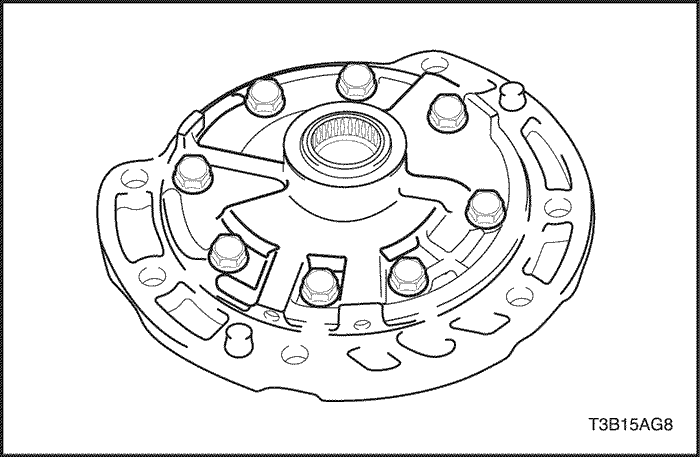
- Retire los 8 tornillos y el árbol del estator.
Aviso: Tenga cuidado de no dejar caer el destornillador pues podría atascarse en el árbol del estator.
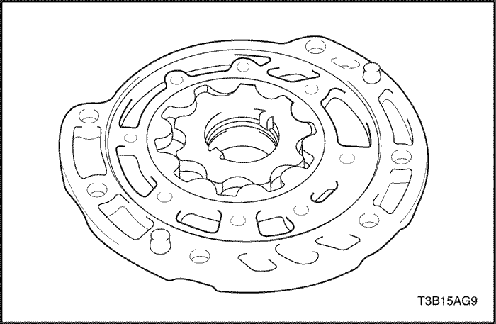
- Retire el engrane impulsor y el engrane impulsado del cuerpo de la bomba de aceite.

Procedimiento de inspección
- Presione el engrane impulsado hacia un lado del cuerpo. Mida la distancia libre con una galga de calibración.
- Distancia libre estándar del cuerpo:
- 0.10 - 0.17 mm (0.0039 - 0.0067")
- Máxima distancia libre del cuerpo: 0,17 mm (0,0067 in.)
- Si la distancia libre es mayor al máximo, sustituya el sub-conjunto del cuerpo de la bomba de aceite.

- Mida la holgura entre los dientes del engrane impulsado y los del engrane impulsor.
- Holgura estándar de las puntas:
- 0.07 - 0.15 mm (0.0028 - 0.0059")
- Máxima holgura de las puntas: 0,15 mm (0,0059 in.)
- Si la holgura de las puntas es mayor al máximo, sustituya el sub-conjunto del cuerpo de la bomba de aceite.
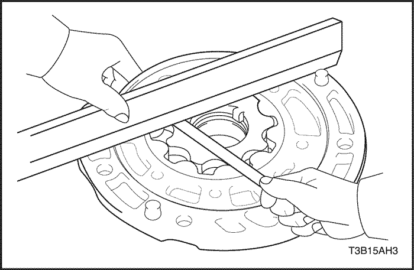
- Mida la distancia libre lateral de ambos engranes utilizando una regla y galgas de calibración.
- Distancia libre lateral estándar:
- 0.02 - 0.05 mm (0.0008 - 0.0020")
- Máxima distancia libre lateral: 0,05 mm (0,0020 in.)
- Si la distancia libre lateral es mayor al máximo, sustituya el engrane impulsor, el engrane impulsado o el cuerpo de la bomba.

- Mida el diámetro interior del buje del cuerpo de la bomba de aceite con un indicador de carátula.
- Diámetro interior estándar: 38,126 mm (1,50102 in.)
- Máximo diámetro interior: 38,188 mm (1,50346 in.)
- Si el diámetro interior es mayor al máximo, sustituya el sub-conjunto del cuerpo de la bomba de aceite.
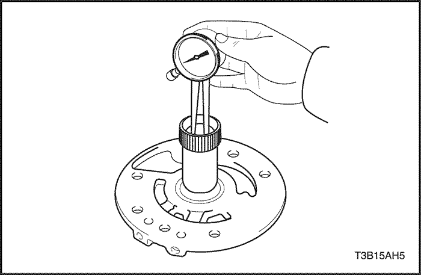
- Mida el diámetro interior de los bujes del árbol del estator con un indicador de carátula.
- Diámetro interior estándar: 18,437 mm (0,72586 in.)
- Máximo diámetro interior: 18,5 mm (0,728 in.)
- Si el diámetro interior es mayor al máximo, sustituya el árbol del estator.
Procedimiento de montaje
- Instale el engrane impulsor y el engrane impulsado de la bomba de aceite.
- Alinee el árbol del estator con cada orificio de tornillo.
- Instale los 8 tornillos.
Apretar
Apriete los tornillos a 9.8 N•m (87 lb-in).
- Haga girar el eje impulsor con 2 destornilladores y asegúrese de que rota suavemente.
Aviso: Tenga cuidado de no dañar el labio para aceite.
Embrague directo
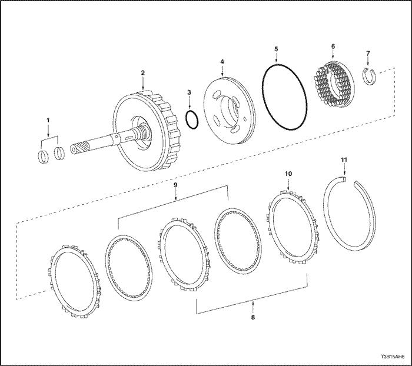
- Junta hermética
- Subconjunto del eje primario.
- Junta tórica
- Pistón
- Junta tórica
- Resorte antagonista
- Anillo de retención
- Placa
- Disco
- Brida
- Anillo de retención
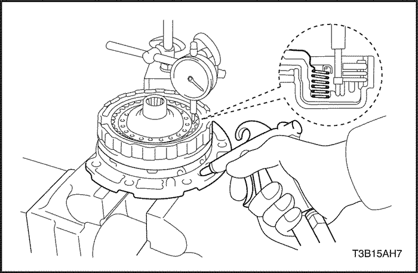
Herramientas necesarias
DW240-020 Compresor de muelle de embrague/freno
SW240-040 Adaptador de embrague directo
Procedimiento de desmontaje
TENGA PRECAUCIÓN AL INSPECCIONAR COMPONENTES CON AIRE COMPRIMIDO YA QUE PUEDE OCASIONAR LESIONES PERSONALES.
- Instale el embrague directo y el cojinete de rodillo de aguja de presión en la bomba de aceite.
- Con un indicador de carátula, mida la carrera del pistón del embrague directo mientras aplica y libera aire comprimido a 392 kPa (57 psi).
- Carrera del pistón: 0.4 - 0.8 mm (0.016 - 0.031 in.)
- Si la carrera del pistón no es estándar, inspeccione los discos, placas y brida.
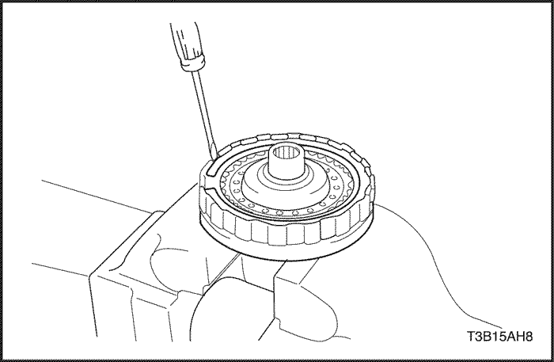
- Retire el anillo de retención con un destornillador.
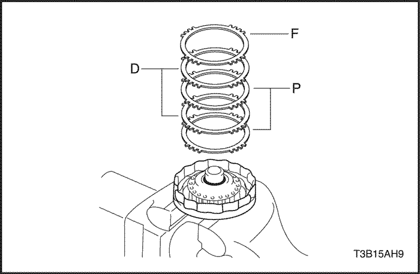
- Retire la brida, 2 discos y 2 placas.
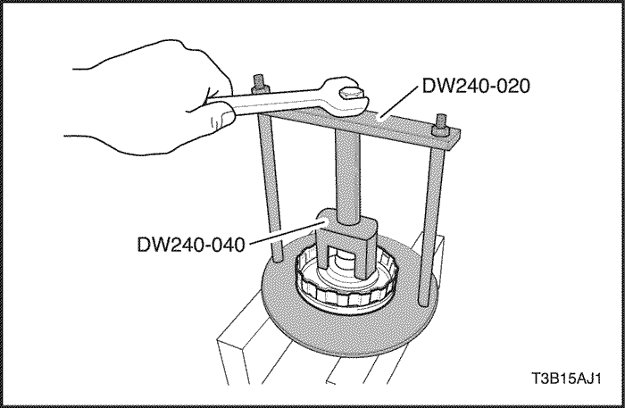
- Coloque el compresor de muelle de freno/embrague DW240-020 y el adaptador de embrague directo DW240-040 sobre el resorte antagonista del embrague directo y comprima.
- Retire el anillo de retención con unos alicates para expandir anillos de retención.
Aviso: Detenga la presión cuando el resorte antagonista del pistón haya bajado 1-2 mm (0,039-0,078 in.) desde la ranura del anillo de retención, evitando así que se deforme el resorte antagonista.
Aviso: No expandir excesivamente el anillo de retención.

- Retire el resorte antagonista del embrague directo.
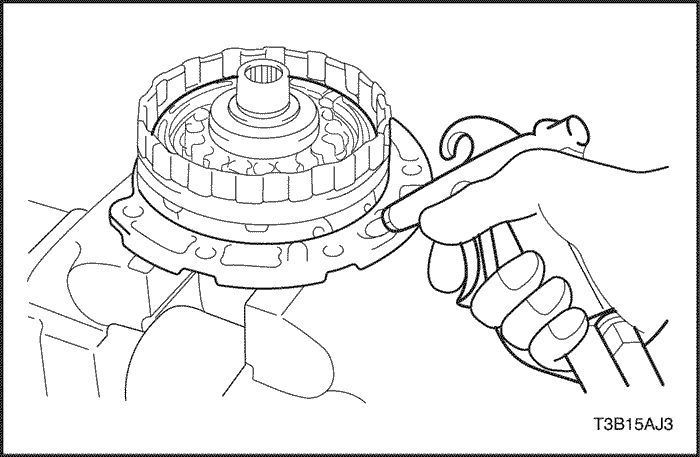
- Instale el embrague directo en la bomba de aceite.
TENGA PRECAUCIÓN AL RETIRAR COMPONENTES CON AIRE COMPRIMIDO YA QUE PUEDE OCASIONAR LESIONES PERSONALES.
Aviso: Al soplar el aire puede saltar el pistón. Al retirar el pistón, sosténgalo con la mano usando un trapo.
Aviso: Tenga cuidado de no salpicar ATF al soplar aire.
- Aplique 392 kPa (57 psi) de aire comprimido a la bomba de aceite para retirar el pistón del embrague directo.
- Si no puede retirar el pistón cuando está inclinado, sople aire comprimido nuevamente mientras empuja el lado que sobresale o retire el pistón con ayuda de unos alicates de punta en cuyo extremo debe colocar cinta de vinilo.

- Retire la junta tórica del pistón del embrague con un destornillador pequeño.

- Retire la junta tórica del eje primario.
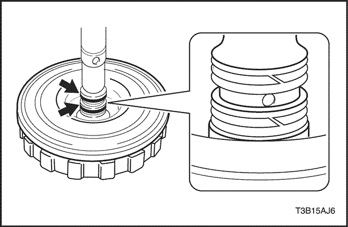
- Retire las 2 juntas herméticas del eje primario.
Aviso: No expandir excesivamente los extremos del anillo.

Procedimiento de inspección
- Verifique si la superficie deslizante del disco, la placa o la brida están desgastados o quemados. De ser necesario, sustitúyalos.
- Si el forro del disco se está desprendiendo o está descolorido, o aún si una parte del número impreso se ha borrado, sustituya todos los discos.
- Antes de montar los nuevos discos, remójelos en ATF por lo menos durante 15 minutos.
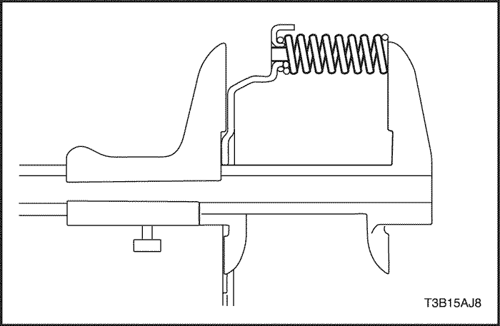
- Mida la distancia libre del resorte antagonista del embrague directo junto con la lámina del resorte, utilizando un nonio.
- Distancia libre estándar: 36,04 mm (1,4189 in.)
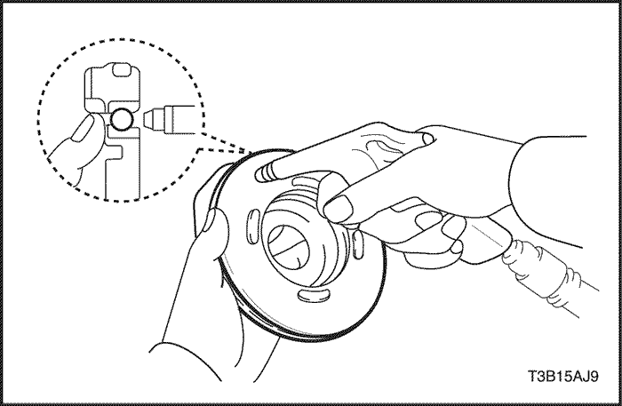
- Sacuda el pistón del embrague directo para verificar que la bola de sellado esté libre.
- Aplique aire comprimido a baja presión para comprobar que la válvula no tenga fugas.
Procedimiento de montaje
- Instale las 2 juntas herméticas al eje primario.
Aviso: No expandir excesivamente los extremos del anillo.
- Cubra una nueva junta tórica con ATF e instálela al eje primario.
- Cubra una nueva junta tórica con ATF e instálela al pistón del embrague directo.
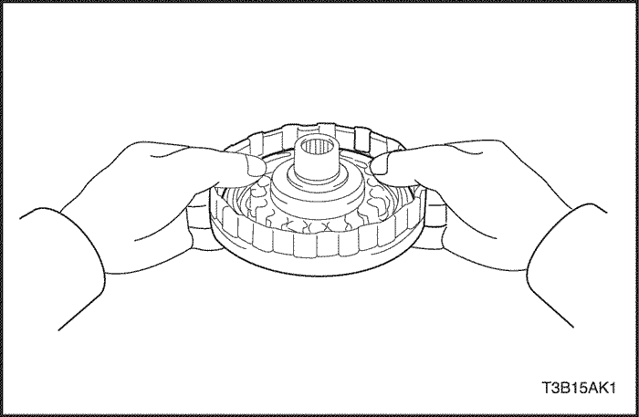
- Cubra el pistón del embrague directo con ATF e instálelo en el tambor del embrague directo.
Aviso: Tenga cuidado de no dañar el labio de sello del pistón del embrague directo.
- Instale el resorte antagonista del embrague directo.
- Coloque el compresor de muelle de freno/embrague DW240-020 y el adaptador de embrague directo DW240-040 sobre el resorte antagonista y comprima.
- Instale el anillo de retención con unos alicates para expandir anillos de retención.
Aviso: Detenga la presión cuando el resorte antagonista del pistón haya bajado 1-2 mm (0,039-0,078 in.) desde la ranura del anillo de retención, evitando así que se deforme el resorte antagonista.
Aviso: No expandir excesivamente el anillo de retención.
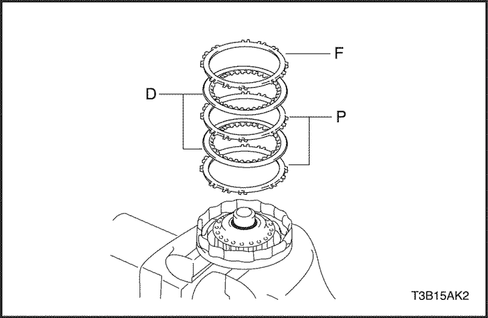
- Instale las 2 placas, 2 discos y la brida.
- Cubra los discos con ATF antes de instalarlos. Instale en el orden siguiente P - D - P - D - F
- (P= Placa, D= Disco, F= Brida)
- Retire el anillo de retención con un destornillador.
- Retire el anillo de retención con un destornillador.
- Compruebe que la abertura del anillo de retención no quede alineada con uno de los cortes.
- Instale el embrague directo en la bomba de aceite.
TENGA PRECAUCIÓN AL INSPECCIONAR COMPONENTES CON AIRE COMPRIMIDO YA QUE PUEDE OCASIONAR LESIONES PERSONALES.
- Con un indicador de carátula, mida la carrera del pistón del embrague directo mientras aplica y libera aire comprimido a 392 kPa (57 psi).
- Carrera del pistón: 0.4 - 0.8 mm (0.016 - 0.031 in.)
- Si la carrera del pistón es menor a su límite, es posible que algunas piezas se hayan montado de forma incorrecta por lo que debe verificar y volver a efectuar el montaje.
- Si la carrera del pistón no es estándar, seleccione una brida diferente.
- Existen 3 bridas con espesores diferentes.
- Espesor de la brida: mm (in.)
No | Grosor | No | Grosor |
1 | 3.0 (0.118) | 3 | 3.4 (0.134) |
2 | 3.2 (0.126) | . | . |
Corona de engrane planetario
- Anillo de retención
- Brida de la corona de engrane planetario
- Corona de engrane planetario
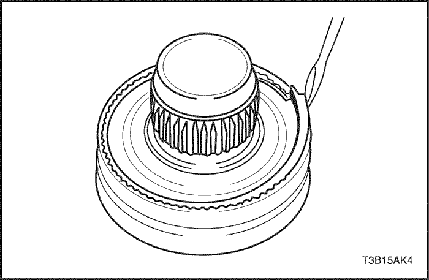
Procedimiento de desmontaje
- Retire el anillo de retención con un destornillador.

- Retire la brida de la corona de engrane planetario de dicha corona.
Procedimiento de montaje
- Instale una nueva brida en la corona de engrane planetario.
- Instale el anillo de retención utilizando un destornillador.
Embrague de una vía
- Anillo de retención
- Embrague de una vía
- Cubo del freno de 2da
- Retén
Procedimiento de desmontaje
- Instale el embrague de una vía y la arandela de empuje al planeta del grupo planetario trasero.
- Sostenga el planeta del grupo planetario trasero y haga girar el embrague de una vía. El embrague de una vía debe girar libremente en sentido del reloj y debe bloquearse en sentido contrario.
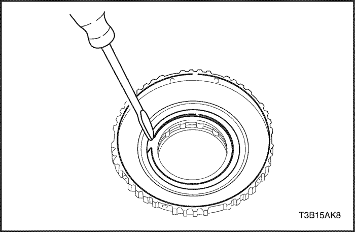
- Retire el anillo de retención del cubo del 2do freno utilizando un destornillador.
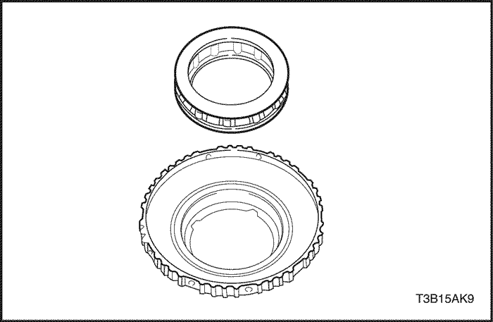
- Retire el embrague de una vía del cubo del 2do freno.

- Retire el retén del cubo del 2do freno con un destornillador pequeño.
Procedimiento de montaje
- Instale el retén en el cubo del 2do freno.
- Instale el embrague de una vía.
- Instale el anillo de retención utilizando un destornillador.
- Instale el embrague de una vía y la arandela de empuje al planeta del grupo planetario trasero.
- Sostenga el planeta del grupo planetario trasero y haga girar el embrague de una vía. El embrague de una vía debe girar libremente en sentido del reloj y debe bloquearse en sentido contrario.
Embrague directo e inverso
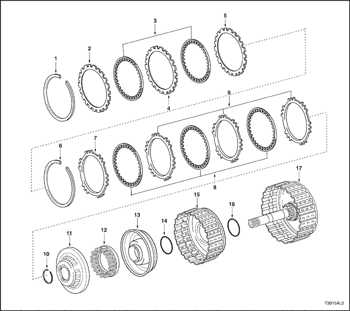
- Junta hermética
- Brida
- Disco
- Placa
- Brida
- Anillo de retención
- Brida
- Disco
- Placa
- Anillo de retención
- Equilibrador del embrague
- Resorte antagonista del embrague directo
- Pistón del embrague directo
- Junta tórica
- Tambor del embrague directo
- Junta tórica
- Subconjunto del eje intermedio
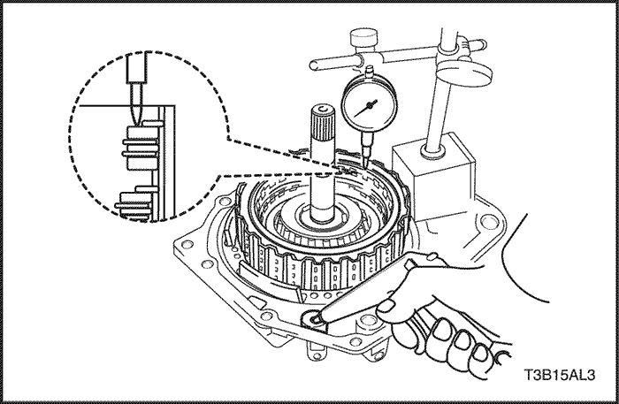
Herramientas necesarias
DW240-020 Compresor de muelle de embrague/freno
DW240-030 Adaptador de embrague directo
DW240-120 Borne de medición
Procedimiento de desmontaje
TENGA PRECAUCIÓN AL INSPECCIONAR COMPONENTES CON AIRE COMPRIMIDO YA QUE PUEDE OCASIONAR LESIONES PERSONALES.
- Instale el embrague directo e inverso y el cojinete de rodillo de aguja de presión en la cubierta trasera de la caja de cambios.
- Con un indicador de carátula, mida la distancia libre de la empaquetadura del embrague inverso mientras aplica y libera aire comprimido a 392 (57 psi).
- Distancia libre de la empaquetadura: 0,40 - 1,00 mm (0,0157 - 0,0394 in.)
- Si la carrera del pistón no es estándar, inspeccione los discos, placas y brida.
TENGA PRECAUCIÓN AL INSPECCIONAR COMPONENTES CON AIRE COMPRIMIDO YA QUE PUEDE OCASIONAR LESIONES PERSONALES.
- Instale el embrague directo e inverso y el cojinete de rodillo de aguja de presión en la cubierta trasera de la caja de cambios.
- Instale el embrague directo e inverso y el cojinete de rodillo de aguja de presión en la cubierta trasera de la caja de cambios.
- Mida la distancia libre de la empaquetadura del embrague directo mientras aplica y libera aire comprimido a 392 (57 psi), utilizando un indicador de carátula y el terminal medidor DW240-120.
- Al aplicar aire comprimido, el embrague directo e inverso saldrá de su lugar. Para evitar que suceda esto al realizar la inspección, presione con una troqueladora o un objeto similar, el eje primario del embrague directo e inverso, de forma que la presión no se aplique directamente sobre el embrague.
- Distancia libre de la empaquetadura: 1.1 - 1.5 mm (0.043 - 0.059 in.)
- Si la carrera del pistón no es estándar, inspeccione los discos, placas y brida.

- Extraiga el anillo de retención del embrague inverso, utilizando un destornillador.
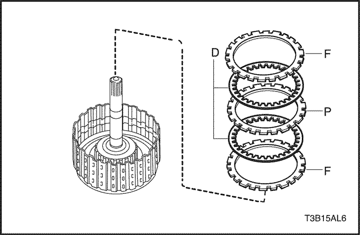
- Retire las 2 bridas, 2 discos y placa del tambor del embrague inverso.

- Retire el anillo de retención con un destornillador.

- Retire la brida, 3 discos y 3 placas del tambor de embrague directo.
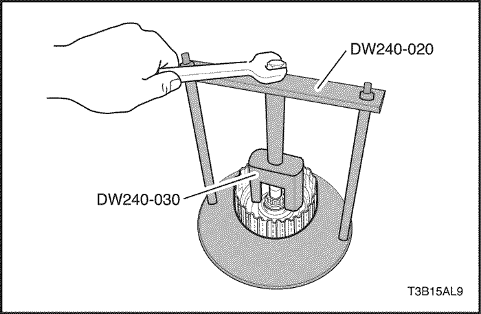
- Comprima el resorte con ayuda del compresor de muelle de freno/embrague DW240-020 y el adaptador de embrague directo DW240-030.
- Retire el anillo de retención con unos alicates para expandir anillos de retención.
Aviso: Detenga la presión cuando el equilibrador del embrague haya bajado 1-2 mm (0,039-0,078 in.) desde la ranura del anillo de retención, evitando así que se deforme el equilibrador del embrague.
Aviso: No expandir excesivamente el anillo de retención.

- Retire el equilibrador del embrague y el resorte antagonista del embrague directo.

TENGA PRECAUCIÓN AL RETIRAR COMPONENTES CON AIRE COMPRIMIDO YA QUE PUEDE OCASIONAR LESIONES PERSONALES.
- Instale el disco múltiple del embrague directo e inverso en la cubierta trasera de la caja de cambios.
- Aplique 392 kPa (57 psi) de aire comprimido a la cubierta trasera de la caja de cambios para retirar el pistón del embrague directo.
Aviso: Al soplar el aire puede saltar el pistón. Al retirar el pistón, sosténgalo con la mano usando un trapo.
Aviso: Tenga cuidado de no salpicar ATF al soplar aire.
- Si no puede retirar el pistón cuando está inclinado, sople aire comprimido nuevamente mientras empuja el lado que sobresale o retire el pistón con ayuda de unos alicates de punta en cuyo extremo debe colocar cinta de vinilo.

TENGA PRECAUCIÓN AL RETIRAR COMPONENTES CON AIRE COMPRIMIDO YA QUE PUEDE OCASIONAR LESIONES PERSONALES.
- Aplique 392 kPa (57 psi) de aire comprimido a la cubierta trasera de la caja de cambios para retirar el tambor del embrague directo.
Aviso: Al soplar con el aire, podría saltar el tambor. Al retirar el tambor, sosténgalo con la mano, utilizando un trapo.
Aviso: Tenga cuidado de no salpicar ATF al soplar aire.
- Si no puede retirar el tambor cuando está inclinado, sople aire comprimido nuevamente mientras empuja el lado que sobresale o retire el tambor con ayuda de unos alicates de punta en cuyo extremo debe colocar cinta de vinilo.
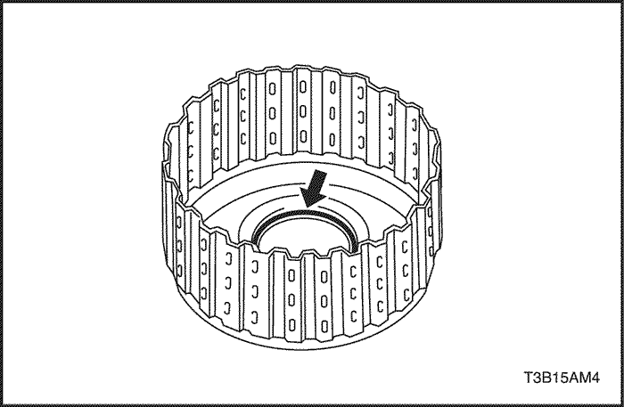
- Retire la junta tórica del tambor del embrague directo con ayuda de un destornillador.

- Retire la junta tórica del subconjunto del eje intermedio con ayuda de un destornillador.

Procedimiento de inspección
- Verifique si la superficie deslizante del disco, placa o brida están desgastados o quemados. De ser necesario, sustitúyalos.
- Si el forro del disco se está desprendiendo o está descolorido, o aún si una parte del número impreso se ha borrado, sustituya todos los discos.
- Antes de montar los nuevos discos, remójelos en ATF por lo menos durante 15 minutos.
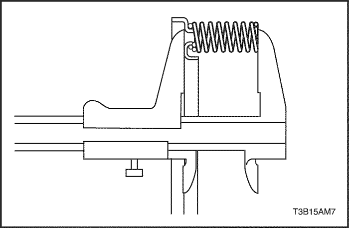
- Mida la distancia libre del resorte junto con el asiento del resorte, utilizando un nonio.
- Distancia libre estándar: 24,04 mm (0,9465 in.)
Procedimiento de montaje
- Cubra una nueva junta tórica con ATF e instálela en el subconjunto del eje intermedio.
- Cubra una nueva junta tórica con ATF e instálela en el tambor del embrague directo.

- Cubra el tambor del embrague directo con ATF e instálelo en su lugar.
Aviso: Tenga cuidado de no dañar la junta tórica y el labio de sello del tambor del embrague directo.
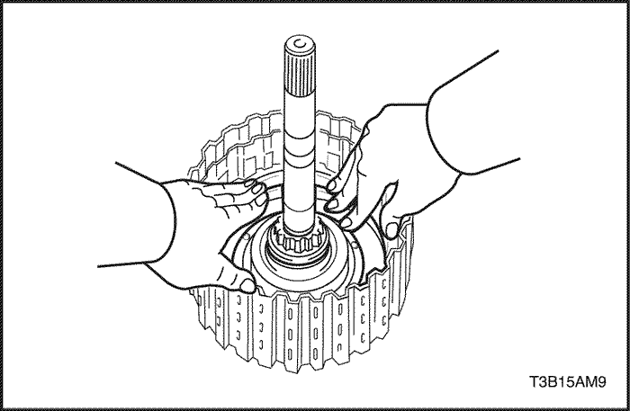
- Cubra el pistón del embrague directo con ATF e instálelo.
Aviso: Tenga cuidado de no dañar el labio de sello del pistón del embrague directo.
- Instale el resorte antagonista del embrague directo y el equilibrador del embrague.
Aviso: Tenga cuidado de no dañar el labio de sello del resorte antagonista del embrague directo.
- Coloque el compresor de muelle de freno/embrague DW240-020 y el adaptador de embrague directo DW240-030 sobre el equilibrador del embrague y comprima el resorte antagonista del pistón.
- Instale el anillo de retención con unos alicates para expandir anillos de retención.
Aviso: Detenga la presión cuando el equilibrador del embrague haya bajado 1-2 mm (0,039-0,078 in.) desde la ranura del anillo de retención, evitando así que se deforme el equilibrador del embrague.
Aviso: No expandir excesivamente el anillo de retención.
- Instale las 3 placas, 3 discos y la brida.
- Instálelos en el siguiente orden: P - D - P - D - P - D - F
- (P= Placa, D= Disco, F= Brida)
- Instale el anillo de retención utilizando un destornillador.
- Compruebe que la abertura del anillo de retención no quede alineada con uno de los cortes.
- Instale la placa, los 2 discos y 2 bridas.
- Instálelos en el siguiente orden: F - D - P - D - F
- (P= Placa, D= Disco, F= Brida)
- Instale el anillo de retención utilizando un destornillador.
- Compruebe que la abertura del anillo de retención no quede alineada con uno de los cortes.
TENGA PRECAUCIÓN AL INSPECCIONAR COMPONENTES CON AIRE COMPRIMIDO YA QUE PUEDE OCASIONAR LESIONES PERSONALES.
- Instale el embrague directo e inverso y el cojinete de rodillo de aguja de presión en la cubierta trasera de la caja de cambios.
- Con un indicador de carátula, mida la distancia libre de la empaquetadura del embrague inverso mientras aplica y libera aire comprimido a 392 (57 psi).
- Distancia libre de la empaquetadura: 0,40 - 1,00 mm (0,0157 - 0,0394 in). Si la distancia libre de la empaquetadura es menor al límite, es posible que algunas piezas se hayan montado de forma incorrecta por lo que debe verificar y volver a efectuar el montaje.
- Si la distancia libre de la empaquetadura no es estándar, seleccione una brida diferente.
- Existen 4 bridas con espesores diferentes.
- Espesor de la brida: mm (in.)
No | Grosor | No | Grosor |
1 | 3.0 (0.118) | 3 | 3.4 (0.134) |
2 | 3.2 (0.126) | 4 | 3.6 (0.142) |

- Instale el embrague directo e inverso y el cojinete de rodillo de aguja de presión en la cubierta trasera de la caja de cambios.
- Mida la distancia libre de la empaquetadura del embrague directo mientras aplica y libera aire comprimido a 939 kpa (57 psi), utilizando un indicador de carátula y el terminal medidor DW240-120.
- Al aplicar aire comprimido, el embrague directo e inverso saldrá de su lugar. Para evitar que suceda esto al realizar la inspección, presione con una troqueladora o un objeto similar, el eje primario del embrague directo e inverso, de forma que la presión no se aplique directamente sobre el embrague.
- Distancia libre de la empaquetadura: 1.1 - 1.5 mm (0.043 - 0.059 in.)
- Si la distancia libre de la empaquetadura es menor al límite, es posible que algunas piezas se hayan montado de forma incorrecta por lo que debe verificar y volver a efectuar el montaje.
- Si la distancia libre de la empaquetadura no es estándar, seleccione una brida diferente.
- Existen 4 bridas con espesores diferentes.
- Espesor de la brida: mm (in.)
No | Grosor | No | Grosor |
1 | 3.0 (0.118) | 3 | 3.4 (0.134) |
2 | 3.2 (0.126) | 4 | 3.6 (0.142) |
 | |  | |
| © Copyright Chevrolet Europe. Reservados todos los derechos |